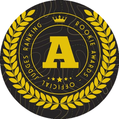
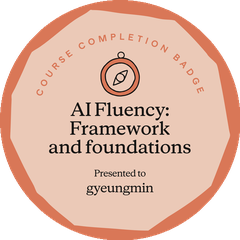
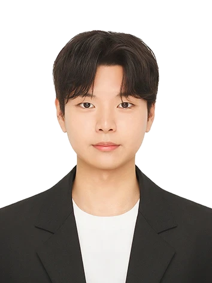

AI 모델을 검증하고,
서비스로 완성합니다.
프로젝트 둘러보기 ↓ profile.py 이력 요약
profile = { "name": "전경민", "role": "AI Engineer · Product Engineer", "now": "POTENUP AI 4기 · AI 에이전트 트랙", "projects": [ "MoNO · 패션 AI MD 에이전트", "Kucanto · AI 요리 코치", "티니핑 판별기 · 사진 검색", "NOLDA · AI 여가 코스 설계", ], "results": { "과업 성공률": "47/50회 (94%)", "오답 단정": "약 330 → 1건", "정답률": "86 → 92%", "AI 호출": "589 → 61회", }, "stack": ["Python", "PyTorch", "FastAPI", "React"], "수상":
"Rookie Awards 2026 · VFX Rank A", "수료": "허깅페이스 에이전트 과정 · 최우수 수료", "수료":
"Claude Academy AI 활용 과정",}6개월의 작업
직접 만든 서비스의 사용 화면
Projects
만든 뒤에는,
직접 검증합니다.
실사용자 테스트로 과업 성공률을 재고, 같은 시험지로 정확도와 비용을 비교했습니다.
막히는 순간을 찾고모델을 비교해 고른 뒤,서비스로 만들어실사용으로 검증해야끝까지 갑니다.
매장·광고 영업·브랜드 현장에서 고객을 직접 만났고,
CG 합성 2년 동안 한 장면의 빛과 경계를 맞췄습니다.
이미지 소스를 구하려 생성형 AI를 처음 써 보며 재미를 느꼈지만, CopyCat·Z-depth 같은 파이썬 기반 모델은 설치조차 못 했습니다. 면접마다 AI 활용 경험을 묻는 걸 보고 제대로 배우기로 했습니다.
지금은 모델을 직접 학습·평가해 고르고,
사용자가 막히는 순간에 맞춰 서비스로 만듭니다.
